Tutorial
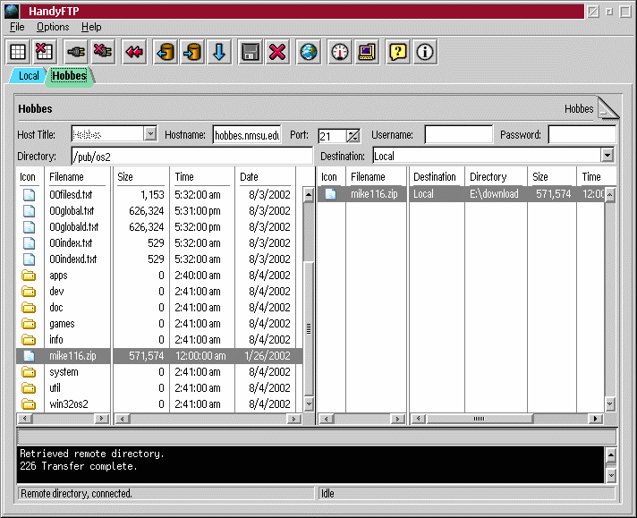
Think of it like this. Each site is a tab. You have a source tab and
a destination tab. So to do a transfer you need at least two connected tabs.
One can be local and one remote. Or both remote. Or both local
(although I don't see much of a point ;)).
If you want to download a file from a remote site to a local dir.
- Have a local tab open.
- Browse to the directory you want to download to.
- Go to the remote tab
- Use the destination combobox to choose your local tab.
- Select the file(s) you want to download
- Use the add to queue button or double click on the
filename.
They will appear in the queue on the right
- Click the flush queue button.
It will transfer all the queued files from one tab (site) to the other.
File Menu
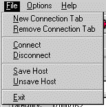
New Connection Tab
Open a new site tab in the notebook.
Remove Connection Tab
Remove the current site tab in the notebook (cannot remove the last tab).
Connect
Attempt to establish a connection to the currently visible site.
Disconnect
Close the current connection to the currently visible site.
Save Host
Save the current host title and coresponding information to the configuration file
for later quick access.
Unsave Host
Remove the current host title from the configuration file.
Exit
Exit HandyFTP closing all active connections.
Options Menu
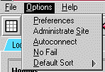
Preferences
Open the preferences dialog.
Administrate Site
Open the Administration dialog where a list of administratable servers is selectable.
Autoconnect
As soon as a host is selected from the host list a connection is immediately established.
No Fail
Never give up on a request even if the retry maximum is reached.
Default Sort
Allows you to select the default sort method for the directory listings. The choices are File, Date, Size and None.
Help Menu
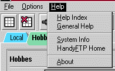 Help Index
Open the help subsystem (browser) to view a list of help topics.
General Help
Open the help subsystem (browser) to view the HandyFTP tutorial and other general help.
System Info
Open the system information dialog.
HandyFTP Home
Opens a browser to the HandyFTP homepage at the OS/2 Netlabs.
About
Opens the about box with copyright information and special thanks.
Preferences
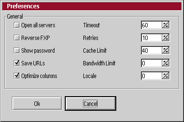
Open All Servers
Opens a tab for each server in your server list at startup. (will connect also if autoconnect)
Reverse FXP
Switch which site is in Passive mode and which is in active mode. Also, causes this reversal
in normal FTP mode also.
Show password
Will not show *'s in the password field when enabled.
Save URLs
On OS/2 a EA .comments will be saved on the file which contains the ftp:// style URL to the
source location. On Windows and Unix the same information will be saved in a file called
"handyftp.url" which is located in the HandyFTP directory.
Optimize Columns
This option will cause HandyFTP to automatically position the column separators so that all the text is visible.
Timeout
The time limit (in seconds) of how long HandyFTP will wait for IO without checking timers.
Retries
How many times HandyFTP will attempt an action before giving up when no fail is not enabled.
Cache Limit
How many directories per site are cached in memory, so it will not automatically read the
directory from the remote server. To force reload of a cache directory click the refresh
button on the toolbar.
Bandwidth Limit
How many kilobytes per second each FTP connection can consume. This option allows you to conserve bandwidth for other applications.
Locale
Allows you to select languages other than english. English (Locale 0) is built into the program, additional languages are provided in the message file. Currently only German (Locale 1) is available.
IPS Administration
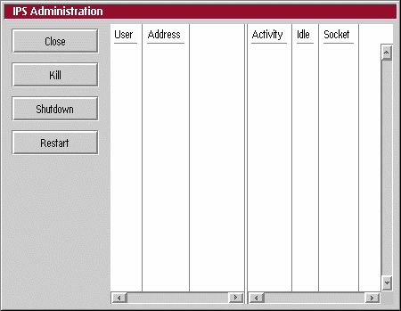
Close
Closes the IPS Administration dialog.
Kill
Disconnects the user selected in the list on the right immediately.
Shutdown
Close the server remotely.
Restart
Restart the server remotely, causing the configuration to be reread.
System Information
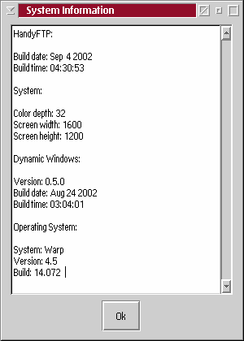
Shows a list of the current operating system stats, as well has HandyFTP
build information. When reporting bugs please also include this information
with the bug report.
Toolbar
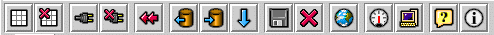
New Tab
Add a new site tab.
Remove Tab
Remove the current site tab.
Connect
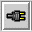
Connect the currently visible tab's host.
Disconnect
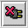
Disconnect the currently visible tab's host connection.
Exit
Exit HandyFTP closing all connections.
Remove from Queue
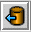
Remove the currently select queue item.
Add to Queue
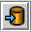
Add currently selected file to the queue.
Flush Queue
Begin transfering queued items.
Save Title
Save current tab's host information to the config file.
Unsave Title
Remove the current tab's host information from the config file.
Refresh
(Re)load the current tab's directory information, even if cached.
Preferences
Open the preferences dialog.
Administrate Site
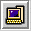
Open the site administration dialog.
General Help
Open the help subsystem to the general help.
About
Open the About dialog.
Brian Smith
dbsoft@technologist.com